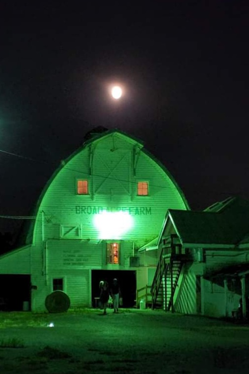
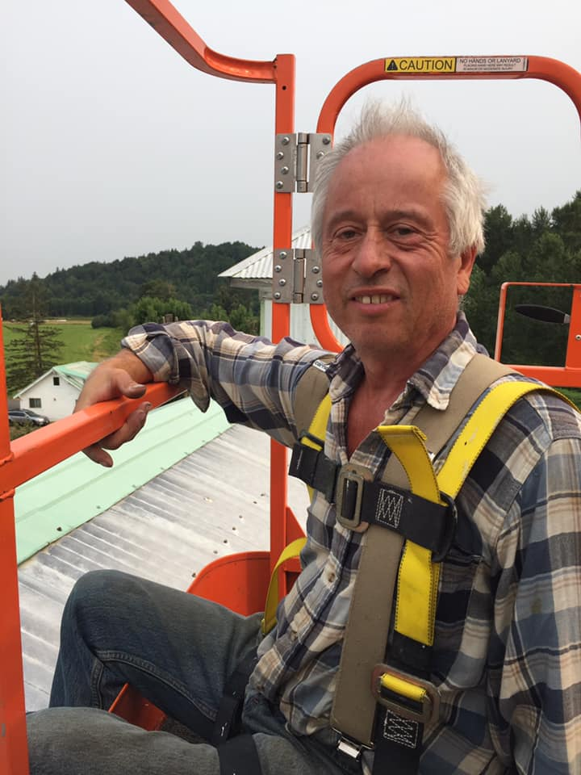
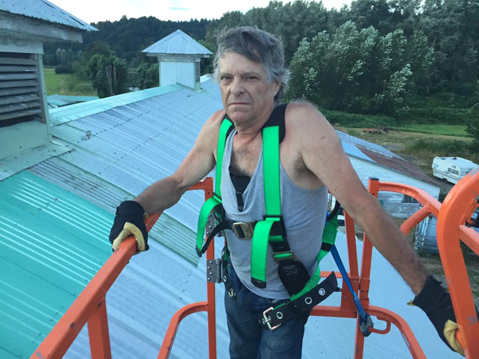

Welcome to the Tango Barn
The Tango Barn is a magical place where wonderful musicians and lovely
dancers come together to socialize, dance, and enjoy the art we love so much
Our 2024 Event Dates
- Sunday May 5th - Ben Thomas and Julieta Iglesias
- Thursday July 4th - Los Angels De Tango
- Sunday August 4th - Winnie Cheung and Julian Peralta
Contact the Tango Barn
Follow the Tango Barn on Instagram
Join the Tango Barn Group on Facebook
Help us preserve this historic barn
History of the Tango Barn
The Tango Barn is located on the historic
William and Estella Adair Farm
built in 1922 as a 115 acre dairy farm in Carnation, Washington
in the lovely Snoqualmie River Valley. In November 1999, it was purchased by Joseph Hayes and converted into a personal estate
where the hawk and the eagle sore, the coyote roam, and salmon swim.
The idea for the Tango Barn came from the talented Sara Rose. She had a dream of converting a historic barn into a
place where people could enjoy the rustic beauty of the wooden structure while learning and practicing the art of Argentine Tango.
Joseph began developing this dream with the help and support of his wife Diana Hayes. It took a number of years to
do all the work necessary to make this beautiful barn a place in which we can foster the love for live music, and Argetine Tango.
Much thangs goes out to Kristina Ivanova, Natasha Mateva, Robin Kallsen, and Rich Hinrichsen for encouraging us to go forward with the project.
Much of the original floor repair was done by Laurel Wittman. We were at a loss as to how to resolve the gaps in the 100 year old
ship lap floor until Angela Ramsayer came up with the idea of routing the raps and gluing in splines. With the help of Angel, Aurthor Newmon,
Andrew Walston, and Joseph Hayes, we were able to save the original 100 year old floor and
rehabilitate it into the beautiful floor you see below.
Many people helped us along the way including the amazing Ben Thomas, Steven Brady, Mirta Wymerszberg, Stuart Zobal, Gabriella Condrea,
Winnie Chueng and Hugo Satorre, and the amazing Pablo Inza & Sofia Saborido.
Throughout the project we have received so much support from Julia Ochs, from creating
a
Go Fund Me page, helping promote our events on
allseattletango.com, and being our guest of honor at so many of our events!
Many thanks also go out to all the people that helped us by attending our events as well as donating funds to help
with the renovation of the floor!




